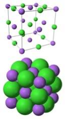

| Chapter 4.6:Ionic
Bonding |
Our discussion up to now has centered on types of bonds that involve valence electrons being “shared” between different atoms. We have seen that the electron density can be considered to be equally distributed between the bonding atoms, or that it may be distorted by being attracted to the more electronegative atom. What we have not looked at yet is the extreme case of this kind of distortion, in which the valence electrons are attracted so much by the electronegative atom that they are transferred completely. This kind of bonding is called ionic bonding (as you are almost certainly already aware). |
4.1 Heterogeneous compounds |
The most familiar of these compounds is sodium chloride
(NaCl), common table salt. NaCl is a “continuous compound”, much like diamond (see Chapter 3). NaCl is a solid at room temperature, with a very high melting point (801 °C), similar to the melting points of silver (961.78 °C) and gold (1064.18 °C), although much lower than the decomposition temperature of diamond (3550 °C). An interesting difference between diamond and sodium chloride occurs on heating. Remember, diamond does not melt; it decomposes once enough energy is added to the system to break the C–C bonds. Under normal circumstances, the carbon atoms react with oxygen (O2) in the air to form carbon dioxide - a process that requires the addition of lots of energy to reverse (as we will see later). On the other hand NaCl melts (solid → liquid) and freezes (liquid → solid),
much like water. Based on this difference, we might be tempted to conclude
that covalent bonds are not broken when salt melts, but that something
stronger that the H-bonds that hold water molecules together are broken
- what could that be? It takes a great deal of energy to change table salt into its constituent elements. First the salt has to be heated to its melting point, then electrical energy must be added to release the elements sodium and chlorine. The reverse reaction, combining the elements sodium and chlorine (don’t do this at home) produces sodium chloride and releases a great deal of energy (411 kJ/mol). Given the release of energy, we suspect that bonds are being formed during this reaction. Ionized Metals One way to think of ionic bonding is that it is the extreme limit of a polar covalent bond. Typically, simple ionic compounds are formed from elements on the left hand side of the periodic table (metals, such as sodium) and elements on the right hand side (non-metals, such as chlorine). The non-metals tend to have a high electronegativity (caused by the high effective nuclear charge), while the metals have low electronegativity – their valence electrons are not very strongly attracted to their nuclei. When a metal atom meets a non-metal atom, the non-metal attracts the valence electrons from the metal, so that for all intents and purposes electrons move from the metal atom (which then has a net positive charge) to the non-metal atom (which now has a net negative charge). This effect, however, applies only to the electrons in the unfilled valence shells. Electrons in a metal atoms filled core orbitals require a lot more energy to remove (why? because they are closer to the positively charged nucleus). If there is a single outer shell electron (as is the case with Na and other group I metals), that electron is often lost and the resulting atom (now called an ion) has a single positive charge (Na+). If there are two outer shell electrons (as in the case of the group II metals, such as Calcium and Magnesium), both can be lost to produce doubly charged ions, such as Ca++ and Mg++ (often written as Ca2+ and Mg2+). At the other side of the periodic table, the non-metals show exactly the opposite pattern, gaining electrons to become negatively charged ions. |
Question to answer:
Questions to ponder :
|
Back to sodium chloride |
 |
Another way to look at NaCl is to think of each Na+ ion as being surrounded by six Cl– ions, and each Cl– ion is surrounded by six Na+ ions. Such an arrangement is possible because the relative sizes of the sodium and chloride ions; the smaller Na+ ions then sit in the “holes” between larger Cl– spheres. The alternating network of positive and negative ions makes for a very stable structure that is difficult to disrupt. The implication? Lots of energy is required to break these interactions, and so allow the ions to move with respect to one another. Many ionic compounds are organized in similar kinds of crystalline structures. A complexity, which we will return to in chapter 6, is that many ionic compounds, including NaCl, are highly soluble in water – they interact strongly with water molecules. Often salts crystallize together with water molecules and form hydrated (with water) forms, as opposed to anhydrous (without water) forms. How Ionic Bonding Explains the Properties of Ionic Compounds Let us return to the properties of ionic compounds and see how this molecular level (microscopic) model of bonding explains their properties. First, their high melting points arise from the fact that enough energy must be supplied so that multiple (strong) coulombic interactions between the ions must be overcome. In water, it is van der Waals and H-bonding attractions between molecules that must be overcome; both of these types of interactions are significantly weaker than full ionic interactions.98 Similarly it takes even more energy to vaporize NaCl. |
Now let us predict the melting points of different ionic compounds. Remember that the force between the the ions is a coulombic attraction, that is: force ∝ (q+ q–)/r2), where q+ and q– are the charges on the ions, and r is the distance between them. This equation tells us that as the charges on the ions increases, so does the force of attraction, but as the distance between them increases the force of attraction decreases. That is: the coulombic attraction should be larger for small highly charged ions, and this should be reflected in the melting points of ionic compounds. |
4.1
Heterogeneous compounds |
Question to answer:
|
| 27-Jun-2012 |